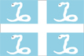

{kind=link}


![[Country map of Martinique]](../maps/mb-map.jpg)
| Martinique |
 |
|
| | |
| Introduction |
Background: Colonized by France in 1635, the island has subsequently remained a French possession except for three brief periods of foreign occupation.
| Geography |
Location: Caribbean, island in the Caribbean Sea, north of Trinidad and Tobago
Geographic coordinates: 14 40 N, 61 00 W
Map references: Central America and the Caribbean
Area:
total:
1,100 sq km
land:
1,060 sq km
water:
40 sq km
Area - comparative: slightly more than six times the size of Washington, DC
Land boundaries: 0 km
Coastline: 350 km
Maritime claims:
exclusive economic zone:
200 nm
territorial sea:
12 nm
Climate: tropical; moderated by trade winds; rainy season (June to October); vulnerable to devastating cyclones (hurricanes) every eight years on average; average temperature 17.3 degrees C; humid
Terrain: mountainous with indented coastline; dormant volcano
Elevation extremes:
lowest point:
Caribbean Sea 0 m
highest point:
Montagne Pelee 1,397 m
Natural resources: coastal scenery and beaches, cultivable land
Land use:
arable land:
8%
permanent crops:
8%
permanent pastures:
17%
forests and woodland:
44%
other:
23% (1993 est.)
Irrigated land: 40 sq km (1993 est.)
Natural hazards: hurricanes, flooding, and volcanic activity (an average of one major natural disaster every five years)
Environment - current issues: NA
| People |
Population: 414,516 (July 2000 est.)
Age structure:
0-14 years:
23% (male 48,578; female 47,283)
15-64 years:
67% (male 137,724; female 139,241)
65 years and over:
10% (male 18,508; female 23,182) (2000 est.)
Population growth rate: 0.96% (2000 est.)
Birth rate: 16.1 births/1,000 population (2000 est.)
Death rate: 6.38 deaths/1,000 population (2000 est.)
Net migration rate: -0.09 migrant(s)/1,000 population (2000 est.)
Sex ratio:
at birth:
1.02 male(s)/female
under 15 years:
1.03 male(s)/female
15-64 years:
0.99 male(s)/female
65 years and over:
0.8 male(s)/female
total population:
0.98 male(s)/female (2000 est.)
Infant mortality rate: 7.97 deaths/1,000 live births (2000 est.)
Life expectancy at birth:
total population:
78.25 years
male:
79.03 years
female:
77.46 years (2000 est.)
Total fertility rate: 1.8 children born/woman (2000 est.)
Nationality:
noun:
Martiniquais (singular and plural)
adjective:
Martiniquais
Ethnic groups: African and African-white-Indian mixture 90%, white 5%, East Indian, Lebanese, Chinese less than 5%
Religions: Roman Catholic 95%, Hindu and pagan African 5%
Languages: French, Creole patois
Literacy:
definition:
age 15 and over can read and write
total population:
93%
male:
92%
female:
93% (1982 est.)
| Government |
Country name:
conventional long form:
Department of Martinique
conventional short form:
Martinique
local long form:
Departement de la Martinique
local short form:
Martinique
Data code: MB
Dependency status: overseas department of France
Government type: NA
Capital: Fort-de-France
Administrative divisions: none (overseas department of France)
Independence: none (overseas department of France)
National holiday: National Day, Taking of the Bastille, 14 July (1789)
Constitution: 28 September 1958 (French Constitution)
Legal system: French legal system
Suffrage: 18 years of age; universal
Executive branch:
chief of state:
President Jacques CHIRAC of France (since 17 May 1995); Prefect Jean-Francois CORDET (since NA)
head of government:
President of the General Council Claude LISE (since 22 March 1992); President of the Regional Council Alfred MARIE-JEANNE (since NA March 1998)
cabinet:
NA
elections:
French president elected by popular vote for a seven-year term; prefect appointed by the French president on the advice of the French Ministry of Interior; the presidents of the General and Regional Councils are elected by the members of those councils
Legislative branch:
unicameral General Council or Conseil General (45 seats; members are elected by popular vote to serve six-year terms) and a unicameral Regional Assembly or Conseil Regional (41 seats; members are elected by popular vote to serve six-year terms)
elections:
General Council - last held NA March 1994 (next to be held NA 2000); Regional Assembly - last held on 15 March 1998 (next to be held by March 2004)
election results:
General Council - percent of vote by party - NA; seats by party - NA; note - the PPM won a plurality; Regional Assembly - percent of vote by party - NA; seats by party - RPR-UDF 14, MIM 13, PPM 7, left parties 4, PMS 3
note:
Martinique elects 2 seats to the French Senate; elections last held NA September 1998 (next to be held September 2001); results - percent of vote by party - NA; seats by party - PPM 2; Martinique also elects 4 seats to the French National Assembly; elections last held 1 June 1997 (next to be held NA 2002); results - percent of vote by party - NA; seats by party - RPR 2, PS 1, independent 1
Judicial branch: Court of Appeal or Cour d'Appel
Political parties and leaders: Combat Worker [Gerard BEAUJOUR]; Martinique Communist Party or PCM [Armand NICOLAS]; Martinique Forces [Maurice LAOUCHEZ]; Martinique Independence Movement or MIM [Alfred MARIE-JEANNE]; Martinique Patriots or PM [leader NA]; Martinique Progressive Party or PPM [Camille DARSIERES]; Martinique Socialist Party or PMS [Ernest WAN-AJOUHU]; Movement for a Liberated Martinique [Philippe PETIT]; National Council of Popular Committees [Robert SAE]; Rally for Democratic Martinique [Felix HILAIRE-FORTUNE]; Rally for the Republic or RPR [Michel CHARLONE]; Republican Party or PR [Jean BAILLY]; Socialist Federation of Martinique or FSM [Jean CRUSOL]; Union for French Democracy or UDF [Jean MAREN]; Union for the Renewal of Ste. Marie [Guy LORDINOT]
Political pressure groups and leaders: Association for the Protection of Martinique's Heritage (ecologist) [Garcin MALSA]; Caribbean Revolutionary Alliance or ARC; Central Union for Martinique Workers or CSTM [Marc PULVAR]; Frantz Fanon Circle; League of Workers and Peasants; Proletarian Action Group or GAP; Socialist Revolution Group or GRS [Philippe PIERRE-CHARLES]
International organization participation: FZ, WCL, WFTU
Diplomatic representation in the US: none (overseas department of France)
Diplomatic representation from the US: none (overseas department of France)
Flag description: a light blue background is divided into four quadrants by a white cross; in the center of each rectangle is a white snake; the flag of France is used for official occasions
| Economy |
Economy - overview: The economy is based on sugarcane, bananas, tourism, and light industry. Agriculture accounts for about 6% of GDP and the small industrial sector for 11%. Sugar production has declined, with most of the sugarcane now used for the production of rum. Banana exports are increasing, going mostly to France. The bulk of meat, vegetable, and grain requirements must be imported, contributing to a chronic trade deficit that requires large annual transfers of aid from France. Tourism has become more important than agricultural exports as a source of foreign exchange. The majority of the work force is employed in the service sector and in administration.
GDP: purchasing power parity - $4.24 billion (1996 est.)
GDP - real growth rate: NA%
GDP - per capita: purchasing power parity - $10,700 (1996 est.)
GDP - composition by sector:
agriculture:
6%
industry:
11%
services:
83% (1997 est.)
Population below poverty line: NA%
Household income or consumption by percentage share:
lowest 10%:
NA%
highest 10%:
NA%
Inflation rate (consumer prices): 3.9% (1990)
Labor force: 170,000 (1997)
Labor force - by occupation: agriculture 10%, industry 17%, services 73% (1997)
Unemployment rate: 24% (1997)
Budget:
revenues:
$900 million
expenditures:
$2.5 billion, including capital expenditures of $140 million (1996)
Industries: construction, rum, cement, oil refining, sugar, tourism
Industrial production growth rate: NA%
Electricity - production: 1.075 billion kWh (1998)
Electricity - production by source:
fossil fuel:
100%
hydro:
0%
nuclear:
0%
other:
0% (1998)
Electricity - consumption: 1 billion kWh (1998)
Electricity - exports: 0 kWh (1998)
Electricity - imports: 0 kWh (1998)
Agriculture - products: pineapples, avocados, bananas, flowers, vegetables, sugarcane
Exports: $250 million (f.o.b., 1997)
Exports - commodities: refined petroleum products, bananas, rum, pineapples
Exports - partners: France 45%, Guadeloupe 28% (1997)
Imports: $2 billion (c.i.f., 1997)
Imports - commodities: petroleum products, crude oil, foodstuffs, construction materials, vehicles, clothing and other consumer goods
Imports - partners: France 62%, Venezuela 6%, Germany 4%, Italy 4%, US 3% (1997)
Debt - external: $180 million (1994)
Economic aid - recipient: $NA; note - substantial annual aid from France
Currency: 1 French franc (F) = 100 centimes
Exchange rates: euros per US$1 - 0.9867 (January 2000), 0.9386 (1999); French francs (F) per US$1 - 5.65 (January 1999), 5.8995 (1998), 5.8367 (1997), 5.1155 (1996), 4.9915 (1995)
Fiscal year: calendar year
| Communications |
Telephones - main lines in use: 155,000 (1994)
Telephones - mobile cellular: NA
Telephone system:
domestic facilities are adequate
domestic:
NA
international:
microwave radio relay to Guadeloupe, Dominica, and Saint Lucia; satellite earth stations - 2 Intelsat (Atlantic Ocean)
Radio broadcast stations: AM 0, FM 14, shortwave 0 (1998)
Radios: 82,000 (1997)
Television broadcast stations: 11 (plus nine repeaters) (1997)
Televisions: 66,000 (1997)
Internet Service Providers (ISPs): NA
| Transportation |
Railways: 0 km
Highways:
total:
2,724 km (1994)
paved:
NA km
unpaved:
NA km
Ports and harbors: Fort-de-France, La Trinite
Merchant marine: none (1999 est.)
Airports: 2 (1999 est.)
Airports - with paved runways:
total:
1
over 3,047 m:
1 (1999 est.)
Airports - with unpaved runways:
total:
1
914 to 1,523 m:
1 (1999 est.)
| Military |
Military branches: French forces (Army, Navy, Air Force), Gendarmerie
Military - note: defense is the responsibility of France
| Transnational Issues |
Disputes - international: none
Illicit drugs: transshipment point for cocaine and marijuana bound for the US and Europe